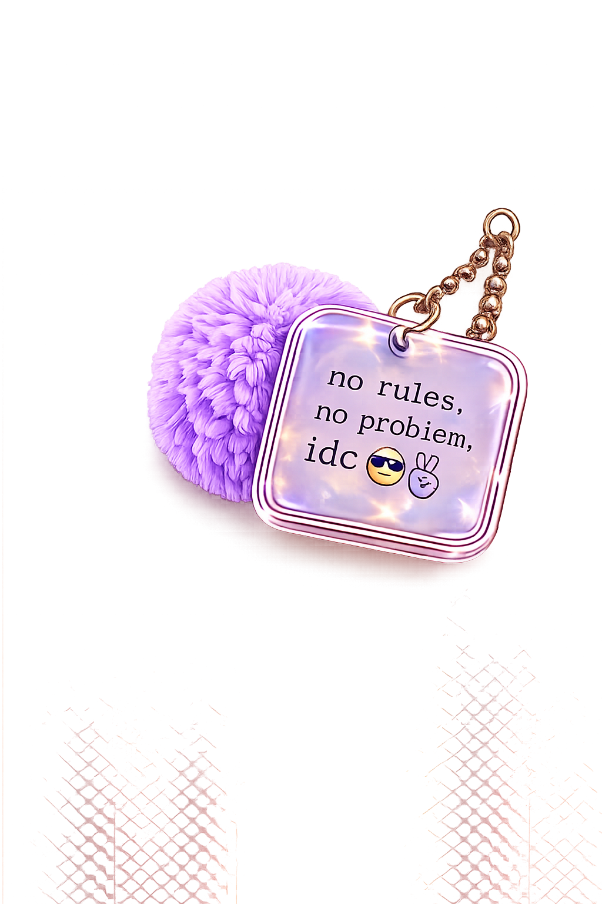
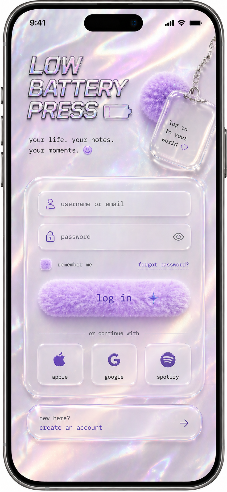
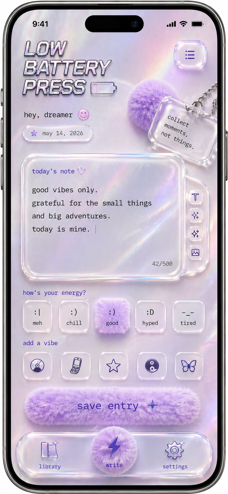
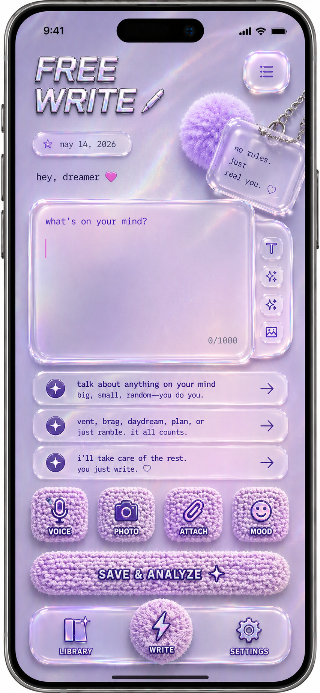
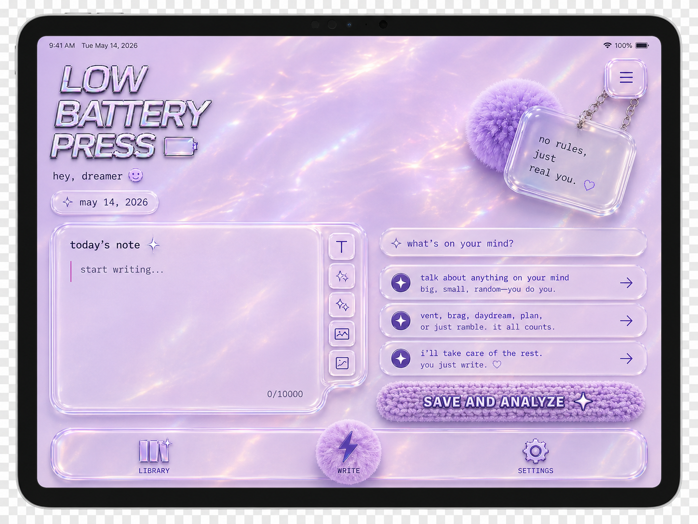

your life. your notes. your moments.
a journal app for writing anything, anytime. write a sentence, a list, a rant, a plan. low battery press organizes the rest. a journal for the days you actually want to journal.


gen z and gen alpha are the most journaled-at generation alive. apps stack streaks, score moods, scrape data, and gamify feelings into therapy-grade output. the ones who actually want to write give up because the form keeps asking them to be better.
most don't want a wellness coach. they want a place to talk to themselves without performing.
low battery press is a journal you write into like you'd text yourself. vent, brag, daydream, plan, or just ramble. it all counts. you write the sentence. the app organizes the rest into a private library you can come back to.
journaling as identity, not as homework.
the brand voice lives on the charm. it talks to you the way a friend texts back at 1am: short, unbothered, on your side. every screen ships with a different charm. they read like things you'd say out loud, then forget you said. the voice is the product.
pearl. holographic. fluffy. glassy. iridescent. four textures, one mood. the thing on your dresser at 14, lit by a CRT.
display in italic chrome for the magazine-cover moments. body in clean mono for the diary-quiet ones. system text in pixel font like the OS that came with the laptop.
the entire interface is built from these five. nothing flat. nothing solid. nothing screams.
icons live as stickers. CDs, butterflies, stars, kaomoji. they tag the entry without explaining it. notebook doodles.
three screens, three charms, two devices. native iOS and iPadOS. each surface earns its own moment. log in, free write, today's note, library, settings.



The writing surface stays open. Mood tagging is optional, driven by kaomoji, and never scored. AI reflects the entry back in your own voice in three lines, so when you open the library later, it still sounds like you.